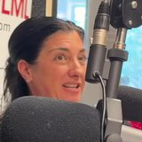
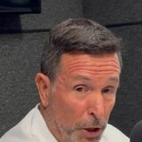
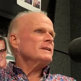
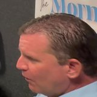
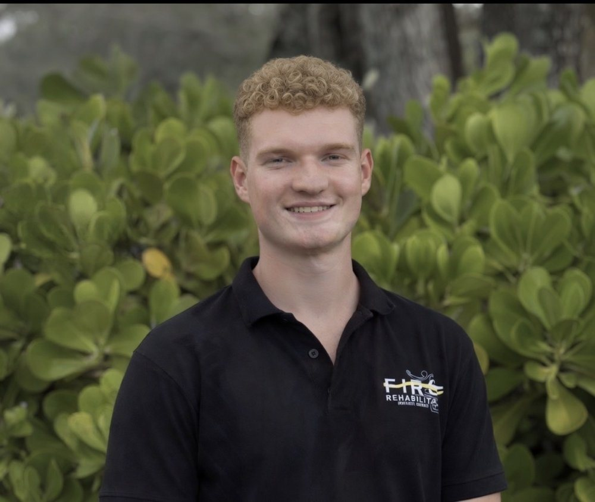
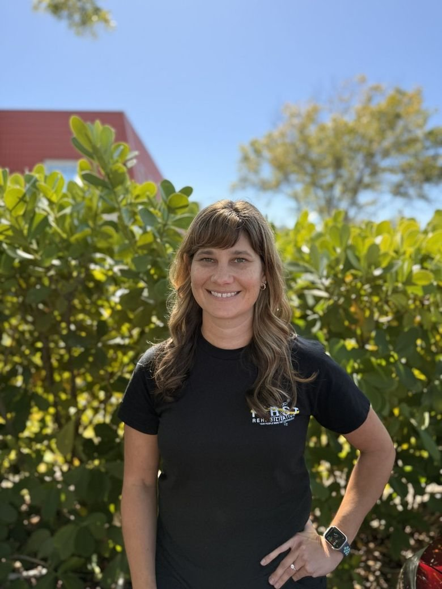

Find a guest
Showing all 21 guests
- MK
Community Voices
Shannon Cake
Newsmax anchor and longtime South Florida investigative reporter
shannoncaketv.com
Nutrition & Wellness
Elyse Marrone, RD/LDN CGP
Registered dietitian, functional and integrative nutrition
The Lifestyle Nutrition Institute

Other Specialists
Dr. Donald Goodwin, MD
Radiologist and co-founder of Palm Beach Radiology, now TGH Imaging

Orthopedic Surgery
Dr. Chaim Arlosoroff, MD
Orthopedic trauma surgeon, St. Mary’s Medical Center
Orthopedic Care Specialists
Orthopedic Surgery
Dr. Michael Leighton, MD
Orthopedic surgeon, sports medicine and joint replacement
Palm Beach Orthopaedic Institute

Orthopedic Surgery
Dr. Zachary McVicker, MD
Sports medicine orthopedic surgeon, hip arthroscopy and preservation
Paley Orthopedic & Spine Institute
Shoulder, Elbow & Hand
Dr. Vani Sabesan, MD
Orthopaedic shoulder and elbow surgeon
Orthopedic Center of Palm Beach County

Shoulder, Elbow & Hand
Dr. Ryan W. Simovitch, MD
Shoulder surgeon, Director of the Shoulder Division at HSS Florida
Orthopedic Surgery
Dr. Rami J. Elkhechen, MD
Sports medicine orthopedic surgeon
NYU Langone Medical Associates, Palm Beach Gardens
Orthopedic Surgery
Dr. Richard L. Weiner, M.D.
Orthopaedic surgeon, hip and knee replacement
Orthopaedic Care Specialists


Other Specialists
Dr. Timur Urakov, M.D.
Spine neurosurgeon, University of Miami
University of Miami Health System
Shoulder, Elbow & Hand
Dr. Thomas F. Saylor, M.D.
Orthopaedic surgeon, shoulder, elbow, wrist and hand
Orthopaedic Care Specialists
No guest matches that search. Try a name, a body part or a practice.
Photos are each guest’s own practice headshot, credited on their profile, or a still from the Pain 2 Power studio. Background details come from each guest’s own practice, employer and professional pages, linked on their profile. Pain 2 Power is for general education, not medical advice; talk with your own doctor about your care.
Life is too short to live in pain.
Start your recovery today with a team dedicated to your long-term wellness and total healing.
Start Your Recovery Today →